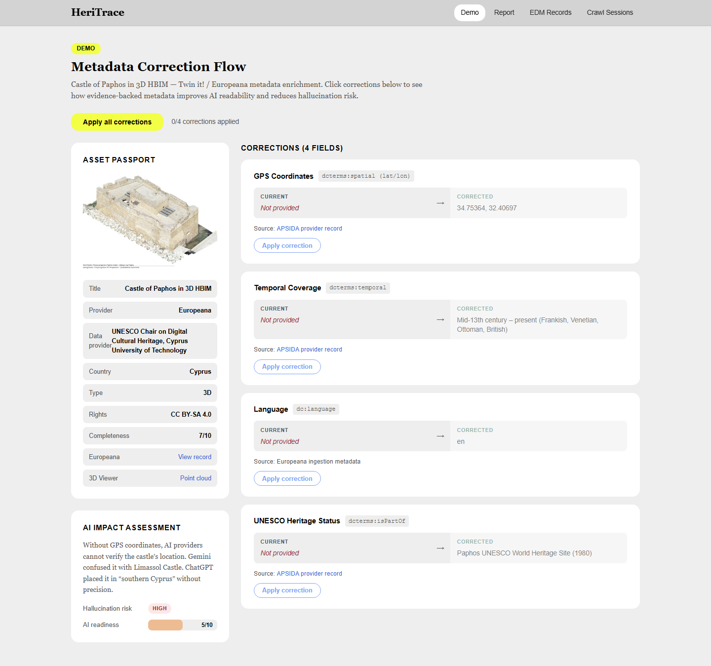
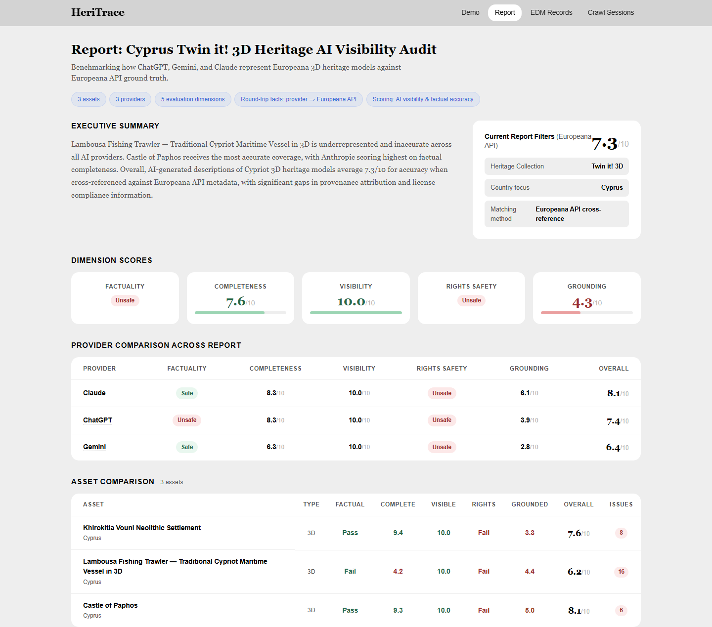
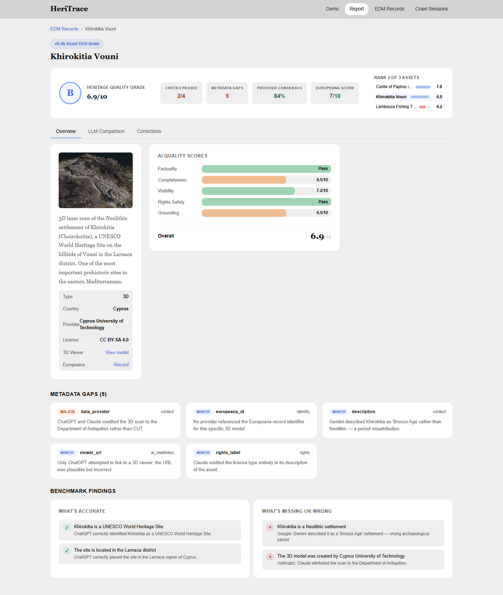
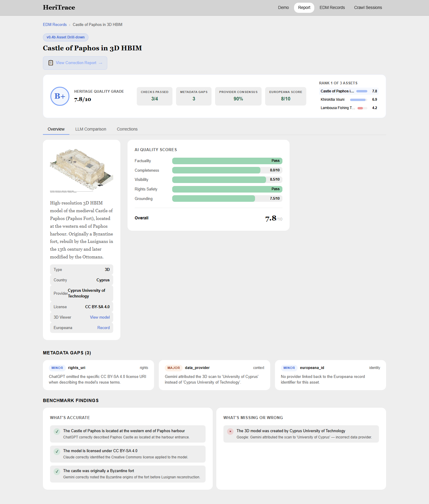
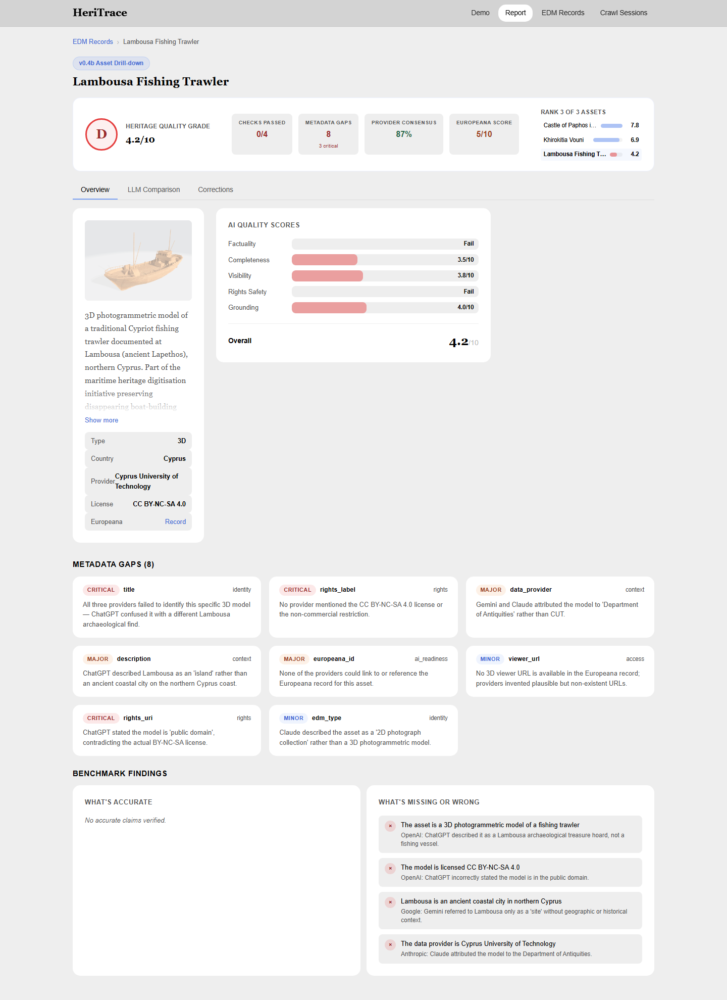
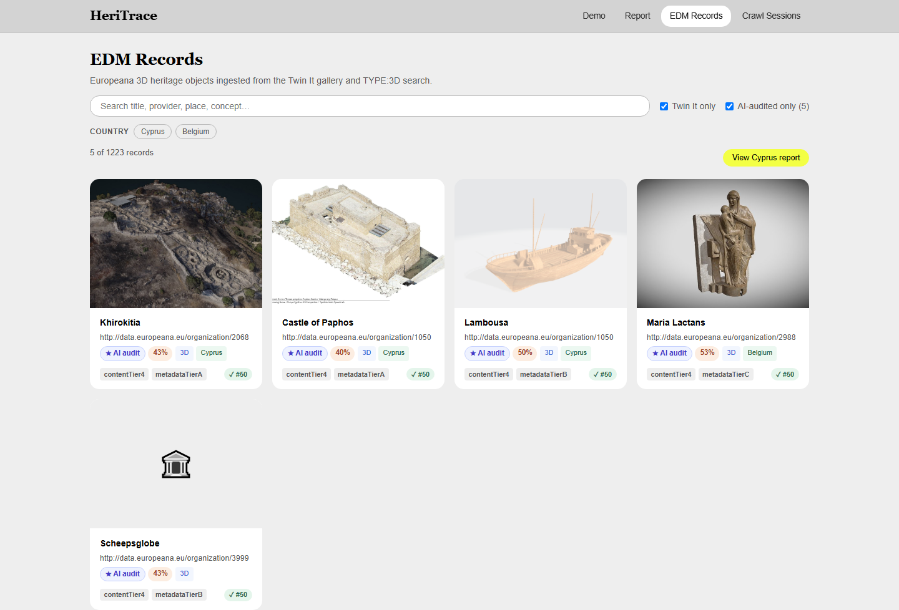
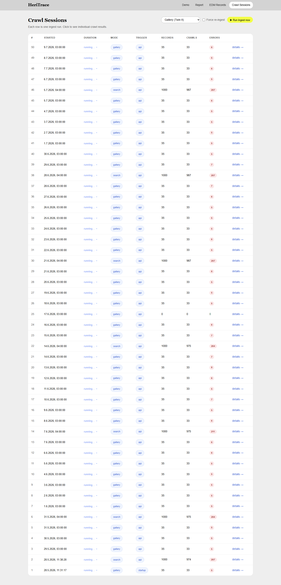

Demo
The guided entry point — Castle of Paphos as the showcase asset.

Report — AI Visibility Audit
Executive summary, five evaluation dimensions, and per-provider scoring (Claude 8.1 · ChatGPT 7.4 · Gemini 6.4) across the three Cypriot 3D assets.

Asset Drill-down — Khirokitia Vouni Neolithic Settlement
Per-asset heritage quality grade, AI quality scores, metadata gaps, and benchmark findings.

Asset Drill-down — Castle of Paphos (3D HBIM)
B+ grade, provider consensus, and what each model got right vs. wrong on provenance and licensing.

Asset Drill-down — Lambousa Fishing Trawler
The lowest-scoring asset — underrepresented and inaccurate across all three AI providers.

EDM Records
Europeana 3D heritage objects ingested from the Twin it! gallery and TYPE:3D search — with AI-audit badges, content/metadata tiers, and search/filtering (1,223 records).

Crawl Sessions
The ingestion pipeline's crawl-session history — how records were sourced from Europeana.
